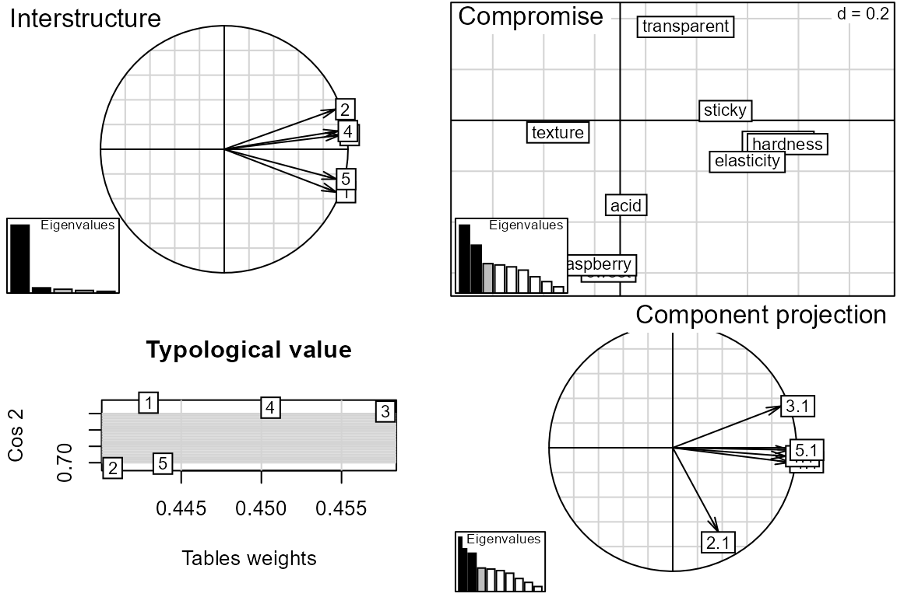

C. Unsupervised multiblock analysis
Source:vignettes/vignette_C_unsupervised.Rmd
vignette_C_unsupervised.Rmd
# Start the multiblock R package
library(multiblock)
#> Registered S3 method overwritten by 'plsVarSel':
#> method from
#> print.mvrVal pls
#> Registered S3 methods overwritten by 'multiblock':
#> method from
#> print.multiblock ade4
#> summary.multiblock ade4
#>
#> Attaching package: 'multiblock'
#> The following object is masked from 'package:stats':
#>
#> loadingsUnsupervised methods
The following unsupervised methods are available in the multiblock package (function names in parentheses):
- SCA - Simultaneous Component Analysis (sca)
- GCA - Generalised Canonical Analysis (gca)
- GPA - Generalised Procrustes Analysis (gpa)
- MFA - Multiple Factor Analysis (mfa)
- PCA-GCA (pcagca)
- DISCO - Distinct and Common Components with SCA (disco)
- HPCA - Hierarchical Principal component analysis (hpca)
- MCOA - Multiple Co-Inertia Analysis (mcoa)
- JIVE - Joint and Individual Variation Explained (jive)
- STATIS - Structuration des Tableaux à Trois Indices de la Statistique (statis)
- HOGSVD - Higher Order Generalized SVD (hogsvd)
The following sections will describe how to format your data for analysis and invoke all methods from the list above.
Formatting data for multiblock data analysis
Data blocks are best stored as named lists for use with unsupervised methods in this package. If also column names and row names are used for all blocks, these can be used for easy labelling in plots supplied by the pls package. See examples below for illustrations of this.
# Load potato data
data(potato)
class(potato)
#> [1] "data.frame"
# data.frames can contain matrices as variables,
# thus becoming object linked lists of blocks.
str(potato[1:3])
#> 'data.frame': 26 obs. of 3 variables:
#> $ Chemical : 'AsIs' num [1:26, 1:14] 3.21 3.26 5.18 3.75 2.92 ...
#> ..- attr(*, "dimnames")=List of 2
#> .. ..$ : chr [1:26] "1" "2" "3" "4" ...
#> .. ..$ : chr [1:14] "PEU" "Sta." "TotN" "Phy." ...
#> $ Compression: 'AsIs' num [1:26, 1:12] 2.23 1.21 1.63 2.68 2.85 ...
#> ..- attr(*, "dimnames")=List of 2
#> .. ..$ : chr [1:26] "1" "2" "3" "4" ...
#> .. ..$ : chr [1:12] "FW20" "BW20" "ST20" "SH20" ...
#> $ NIRraw : 'AsIs' num [1:26, 1:1050] -0.831 -0.807 -0.836 -0.78 -0.769 ...
#> ..- attr(*, "dimnames")=List of 2
#> .. ..$ : chr [1:26] "1" "2" "3" "4" ...
#> .. ..$ : chr [1:1050] "400" "402" "404" "406" ...
# Explicit conversion to a list
potList <- as.list(potato[1:3])
str(potList)
#> List of 3
#> $ Chemical : 'AsIs' num [1:26, 1:14] 3.21 3.26 5.18 3.75 2.92 ...
#> ..- attr(*, "dimnames")=List of 2
#> .. ..$ : chr [1:26] "1" "2" "3" "4" ...
#> .. ..$ : chr [1:14] "PEU" "Sta." "TotN" "Phy." ...
#> $ Compression: 'AsIs' num [1:26, 1:12] 2.23 1.21 1.63 2.68 2.85 ...
#> ..- attr(*, "dimnames")=List of 2
#> .. ..$ : chr [1:26] "1" "2" "3" "4" ...
#> .. ..$ : chr [1:12] "FW20" "BW20" "ST20" "SH20" ...
#> $ NIRraw : 'AsIs' num [1:26, 1:1050] -0.831 -0.807 -0.836 -0.78 -0.769 ...
#> ..- attr(*, "dimnames")=List of 2
#> .. ..$ : chr [1:26] "1" "2" "3" "4" ...
#> .. ..$ : chr [1:1050] "400" "402" "404" "406" ...Method interfaces
All unsupervised methods supplied by this package share a common interface which expects a list of blocks as the first input. Methods that are imported from other packages are wrapped in a function that gives the mentioned interface. Results from the imported method are stored in a separate slot in the output in case specialised plot or summary functions are available or direct inspection is needed. If default parameters are used, a single list of blocks with suitably linked matrices (shared objects or variables) will result in a basic analysis (see first code block below). In addition, all methods have parameters that control their behaviour, e.g., number of components, convergence criteria etc.
Shared sample mode
The following block of code loads a multiblock data set, extracts three blocks and runs through all included unsupervised methods having shared sample mode using the same interface.
# Object linked data
data(potato)
potList <- as.list(potato[c(1,2,9)])
suppressWarnings( # FactoMineR <=2.3 uses recycling of length 1 array.
invisible({capture.output({ # DISCOsca in package RegularizedSCA is highly verbose.
pot.sca <- sca(potList)
pot.gca <- gca(potList)
pot.gpa <- gpa(potList)
pot.mfa <- mfa(potList)
pot.pcagca <- pcagca(potList)
pot.disco <- disco(potList)
pot.hpca <- hpca(potList)
pot.mcoa <- mcoa(potList)
})}))Shared variable mode
The following block of code loads a sensory data set, extracts blocks and runs through all included unsupervised methods having shared variable mode using the same interface.
# Shared variable mode data
data(candies)
candyList <- lapply(1:nlevels(candies$candy), function(x)candies$assessment[candies$candy==x,])
invisible({capture.output({ # jive in package r.jive is highly verbose.
can.sca <- sca(candyList, samplelinked = FALSE)
can.jive <- jive(candyList)
can.statis <- statis(candyList)
can.hogsvd <- hogsvd(candyList)
})})Common output elements across methods
Output from all methods include slots called loadings, scores, blockLoadings and blockScores, or a suitable subset of these. An info slot describes which types of (block) loadings/scores are in the output. There may be various extra elements in addition to the common elements, e.g. coefficients, weights etc.
# SCA used with shared variable mode data returns block loadings and common scores:
names(pot.sca)
#> [1] "blockLoadings" "scores" "samplelinked" "info"
#> [5] "explvar" "call" "data"
summary(pot.sca)
#> Simultaneous Component Analysis
#> ===============================
#>
#> $scores: Common scores (26x2)
#> $blockLoadings: Block loadings:
#> - Chemical (14x2), Compression (12x2), Sensory (9x2)
# MFA stores individual PCA scores and loadings as block elements:
names(pot.mfa)
#> [1] "scores" "loadings" "blockScores" "blockLoadings"
#> [5] "info" "MFA" "call" "explvar"
#> [9] "data"
summary(pot.mfa)
#> Multiple Factor Analysis
#> ========================
#>
#> $scores: Global scores (26x5)
#> $loadings: Global loadings (35x5)
#> $blockScores: Individual PCA scores:
#> - Chemical (26x5), Compression (26x5), Sensory (26x5)
#> $blockLoadings: Individual PCA loadings:
#> - Chemical (14x5), Compression (12x5), Sensory (9x5)Scores and loadings
Functions for accessing scores and loadings are based on functions from the pls package, but extended with a block parameter to allow extraction of common/global scores/loadings and their block counterparts. The default block is 0, corresponding to the common/global block. Block scores/loadings can be accessed by number or name.
# Global scores plotted with object labels
scoreplot(pot.sca, labels = "names")
# Block loadings for Sensory block with variable labels in scatter format
loadingplot(pot.sca, block = "Sensory", labels = "names")
# Non-existing elements are swapped with existing ones with a warning.
sc <- scores(pot.sca, block = 1)
#> Warning in scores.multiblock(pot.sca, block = 1): No block scores. Returning
#> global/consensus scores.Plot from imported package
Some methods in the package are wrappers for imported methods from other packages. Using the stored object from an imported method (see $statis code below), one can exploit methods from the original package to expand on the methods available in this package. An example is the summary plot for the statis method in the package ade4.
# Apply a plot function from ade4 (no extra import required).
plot(can.statis$statis)